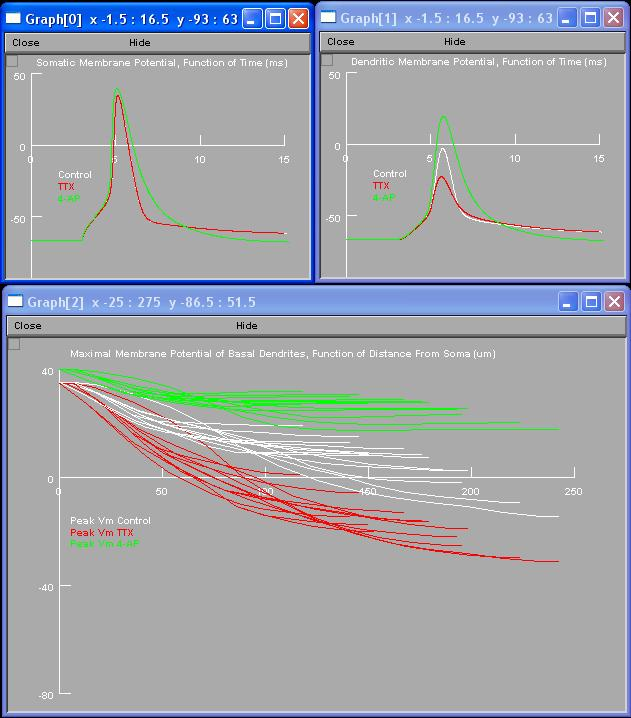

Instructions how to use ModelDB entry which accompanies: Corey D. Acker and Srdjan D. Antic. Quantitative Assessment of the Distributions of Membrane Conductances Involved in Action Potential Backpropagation Along Basal Dendrites. Journal of Neurophysiology, 2008. - - - - - - - - - - - - - - - - - The following simulations work well in NEURON 6.2. They do NOT work well in NEURON 5.6 and NEURON 5.8. Other versions of NEURON have not been tested. - - - - - - - - - - - - - - - - - Setup (assuming Windows): Either auto-launch from ModelDB and click buttons or: - Unzip AckerAnticBasalBackprop.zip. - Upon extraction of the zipped files, membrane mechanisms and morphology files reside in a separate directory called "Model". - Compile the .mod files using the NEURON "mknrndll" command in the "Model" directory. Make sure that mod files are compiled in the "Model" directory. If compiling was successful each mod file in the Model directory must be accompanied by one .o file. - Move the .dll file (nrnmech.dll) from the "Model" directory to the directory where you unpacked the files; the directory that includes AckerAnticBasalBackprop.hoc. - Go to the directory that includes AckerAnticBasalBackprop.hoc. - Double click on AckerAnticBasalBackprop.hoc. This will open 7 windows including the nrniv command console. - - - - - - - - - - - - - - - - - REPRODUCING FIGURE 6B. - To reproduce Fig. 6B use GUI (Best fit model). Hit RUN button. Wait until the model finishes three sets of simulations (BLACK, RED, and GREEN). BLACK = Control with all currents intact. RED = Block of sodium current with TTX. GREEN = Block of A-type current with 4-AP.  - Graph[0] plots the AP waveforms in the soma. - Graph[1] plots the AP waveforms in the basal dendrite (indicated by asterisk in Figure 6A). Graph[2] has a dual function. (1)During the simulation Graph[2] is a space plot of AP waveforms along all basal dendrites considered in the model (BLACK motion). (2)At the end of the entire set of experiments (CTR, TTX and 4-AP) Graph[2] plots peak AP amplitudes along all basal dendrites considered in the model (multiple locations). Each line corresponds to one basal dendrite. Each dendrite is analyzed in three conditions (CONTROL, TTX and 4-AP) and therefore each dendrite is represented with three lines at the end of simulations (BLACK, RED and GREEN). - Note: Duration is set to 15 ms. This can be changed in a hoc file by changing tstop variable. - - - - - - - - - - - - - - - - - TRIPLETS - REPRODUCING FIGURES 8B-2 and 10C - Double click on Triplets.hoc. This will open 9 windows. REPRODUCING FIGURE 8B-2 - Click "Run best fit model (Figure 8B)". - Graph[0] plots the AP waveforms in the soma (black) superimposed with the AP waveforms in the dendritic segment marked "dend-1" in Fig. 8B-1 (red). - Graph[1] plots three current pulses delivered into the soma to trigger 3 APs. - Graph[2] plots the AP waveforms in the basal dendrite location indicated by asterisk in Figure 8B-1. REPRODUCING FIGURE 10C - Run special case dendrite (Figure 10C). - Same graphs, same recording locations, as in the previous exercise. - Note that only one basal dendrite (Graph[2]) was endowed with special case properties. The output from this dendrite is displayed in Figure 10C - Right. Basal dendrite shown in Graph[0](red) is "Typical", best fit model dendrite. - Fig. 10C used 5 ms inter-stimulus interval rather than 8 ms, which gives "smooth" boosting of second and third action potentials, otherwise all the amplitude boosting appears in the second action potential and no further boosting appears in the third. - - - - - - - - - - - - - - - - - LOCAL SPIKE SIMULATIONS (FIGURES 9 and 10) - Double click on LocalSpikes.hoc. This will open 10 windows. - Graph[3] plots the membrane potential waveform in the soma. - Graph[0] plots the membrane potential waveform in the basal dendrite location indicated by BLUE circle in PointProcessManager, but also the same location is indicated by circle in Fig. 9A. - Graph[2] plots the conductance change (G) applied to the dendritic segment under study. - Graph[1] plots the local transmembrane current (I) caused by plateau conductance change. - Click buttons in GUIs corresponding to specified figures to reproduce them. - "Blocking IA" in these simulations only sets the proximal or perisomatic IA conductance to zero, however, the distribution is unchanged and the channel density therefore rises from zero with a slope of 0.7 pS/um2 per micrometer. - According to the first derivative of the somatic voltage waveform (dV/dt) the branch strength potentiation was successful only in the model basal dendrite with special properties. These special properties included higher sodium conductance and higher A-type conductance (Special Case Dendrite A-Type Block). 20120201 Cad.mod updated to use derivimplicit instead of euler as per http://www.neuron.yale.edu/phpBB/viewtopic.php?f=28&t=592